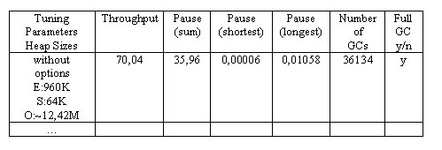

Profile the garbage collector and tune it in order to reduce the time spent with garbage collection.
In this lab you are asked to analyze an application's garbage collector using the tools GCViewer, VisualGC, and the GC trace output, if necessary. You have the opportunity to tune the garbage collector and check the results of your tuning attempts. The goal is to increase the application’s throughput.
GCTuning
The program used for this activity is a synthetic program that periodically allocates chunks of memory from the heap and releases them again. It runs for two minutes with a steady allocation rate. On platforms with a slow CPU it might run longer, especially in its original form before you started tuning the garbage collector.
This activity gives you an opportunity to try out some of the GC options that have been mentioned during the lecture. In principle, you are free to experiment with as many tuning options as you wish. In practice, however, it is advisable that you don't experiment thoughtlessly. For GC tuning it is essential that you stick to a strategy and modify the JVM settings systematically rather than erratically twisting and tweaking options here and there.
Follow the instructions. Use the table below to keep track of the different tuning approaches and their respective results.

A template of this table is available as an Excel file in the skeleton
directory`s subdirectory data.
You can retrieve the figures needed for filling in the table from GCViewer (throughput, pause times) and VisualGC (number of GCs, size of eden, survivor spaces, old generation, full gc). “E”, “S” and “O” stand for “Eden”, “Survivors” and “Old Generation”. A look into the trace output file (usually named gc.log.txt) provides the information whether a full GC happened or not. Look for the string “Full GC”.
What follows is a step-by-step description of the preparations for the actual analysis and tuning. If you need the JVM GC options you can find an overview of the options in JVM options. [Note, this list of JVM options might be useful as a reference later in your project, since information regarding JVM-specific options is notoriously hard to find.]
Compile the Java source in the src directory.
The program invocation could look like this:
>java -jar <GCViewer_installation_directory>\gcviewer-<version>.jarIn GCViewer, load the GC output file, e.g. gc.log.txt.
The jps tool is part of the JDK and emits the vmids of
all local JVMs. If it does not emit anything, although the Test
program is running, read the trouble shooting section of the VisualGC installation
instructions.
Once you have retrieved the Test program’s vmid, use it for invocation
of the VisualGC tool:
The tool’s invocation script is located in its installation directory,
e.g. at C:\ProgramFiles\jvmstat\bat\visualgc.cmd.